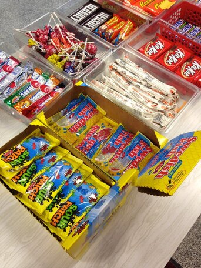

Professional Experience
By Byron Bursett
If you are looking for a look into my professional work, you have come to the right place. This page is kind of like a more in-depth business card. Here is where I keep an updated list of different jobs I have worked in.
Professional Work
When I was in High School I owned my own business. I started in the last semester of my freshman year all the way till my last semester as a senior. I sold concessions to students in between classes and learned about managing money, products, and eventually even other students. At the start of my Junior year some students approached me asking how I started my business. I told them how and then I offered them an opportunity to work for me. I supplied them with products at the start of the day and they kept a portion of the pay that they made. It allowed us to learn about sales and it taught me a lot about working with employees and customers.
I attended college for a semester at a community college in Bakersfield. At the time I worked for food services. This was a fast-paced environment with many moving parts. I needed work that would be easy for me to access while in college and something that would push me. I learned so much while I was there about working as a team and being efficient. I learned about how devastating rumors can be when many of my coworkers spoke poorly about some of the coworkers they disliked. I learned how important it is to have a workplace where hard work is important, but respecting and including coworkers is even more important.
